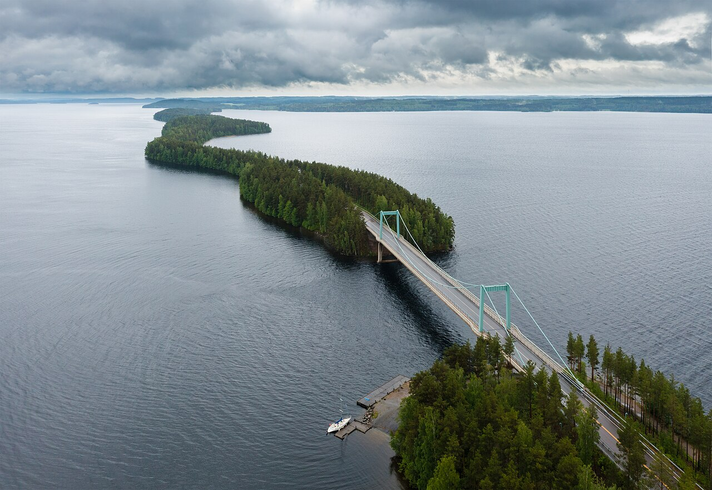
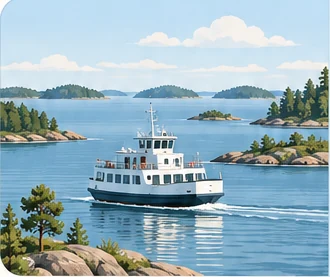
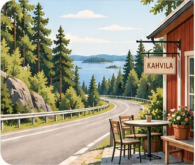
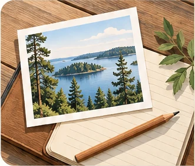
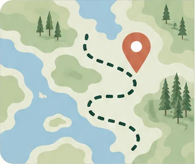

Matkaile Suomessa
Vapaus kulkea · Ilo löytää
Parhaat paikat, pysähdykset ja elämykset unohtumattomiin kotimaan matkoihin.
Pysähdy matkalla
Nähtävyydet, luonto, taukopaikat, ruukkikylät sekä kahvilat ja ravintolat.
Suosittuja kohteita
Tutustu paikkakuntiin →
📍 SavonlinnaHistoriallinen linnakaupunki
📍 Saariston rengastieUpea reitti saaristomaisemissa
📍 FiskarsTunnelmallinen ruukkikylä📍 Kolin kansallispuistoUpeat maisemat ja patikointireitit
📍 Löydä uusi kohdeKiinnostavia pysähdyksiä
📍 Matkailijan vinkitMatkan parhaat paikat